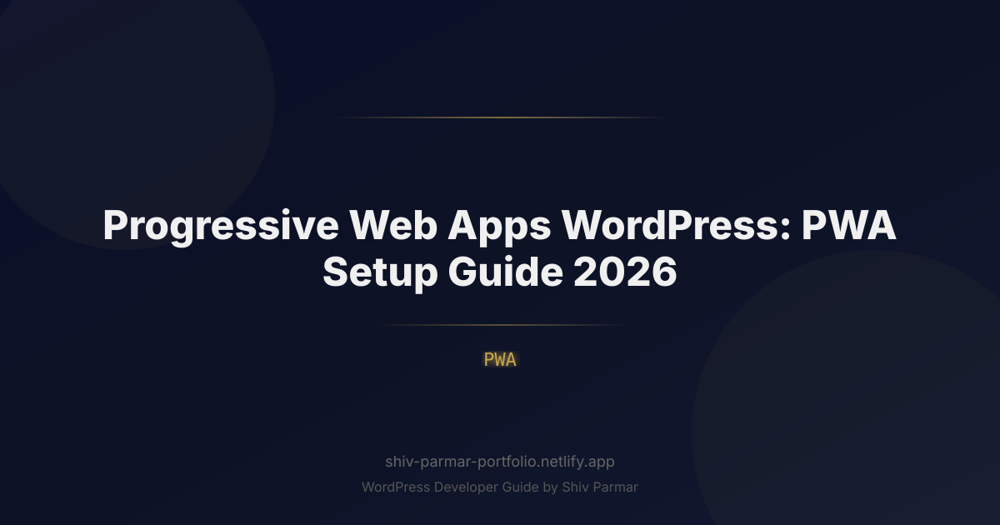

Progressive Web Apps WordPress: PWA Setup Guide | Shiv Parmar
Table of Contents
In an era where over 65% of global web traffic originates from mobile devices, traditional web experiences often fall short of meeting user expectations. Users demand modern mobile experiences: blazing-fast load times, seamless offline functionality, instant push notifications, and home screen access without friction. Historically, delivering these features required building and maintaining separate native mobile apps for iOS and Android—a process costing tens of thousands of dollars and requiring approval from app store gatekeepers.
Enter the Progressive Web App (PWA). By converting your website into a WordPress PWA, you bridge the gap between web and mobile app architecture. A WordPress site equipped with PWA technology behaves exactly like a native mobile app on smartphones, tablets, and desktop devices while leveraging the power, scalability, and ease of content management that WordPress provides.
Whether you run an e-commerce store, a content blog, a corporate portal, or a SaaS platform on WordPress, implementing a PWA in 2026 is no longer just a technical luxury—it is a critical strategy for retention, search engine optimization (SEO), and conversion rate optimization. This guide provides an actionable, step-by-step roadmap to building, configuring, and optimizing a Progressive Web App in WordPress.
What is a Progressive Web App (PWA) in WordPress?
A Progressive Web App is a web application built using modern web standards (JavaScript, HTML, CSS, and web APIs) that delivers an app-like experience directly through a browser. Unlike standard websites, a PWA can be installed directly onto a user’s home screen, work completely offline, handle background sync, and receive real-time push notifications.
When combined with WordPress, a PWA transforms your site dynamically. The core CMS handles database queries, dynamic content publishing, REST API requests, and page rendering, while the PWA layer (executed via browser APIs) manages static resource caching, network routing, and offline storage.
To qualify as a fully functional PWA, a WordPress site relies on three foundational technical pillars:
- HTTPS Protocol: Web security is non-negotiable. Modern browsers only register PWA components like Service Workers over secure connections.
- Web App Manifest (
manifest.json): A JSON configuration file that defines how the application looks and behaves when installed on a home screen (app name, icons, theme color, display mode). - Service Worker (
sw.js): A background JavaScript file running independently of the web page, intercepting network requests, managing custom caching strategies, and facilitating background synchronization and notifications.
Comparing Web Experiences: Website vs. WordPress PWA vs. Native Mobile App
| Feature / Capability | Standard WordPress Site | WordPress PWA | Native Mobile App |
|---|---|---|---|
Why WordPress PWAs Matter in 2026
The web development landscape in 2026 places an overwhelming emphasis on page user experience metrics, page stability, and instantaneous loading speeds. Search engines, led by Google's continuous refinement of Core Web Vitals—specifically Interaction to Next Paint (INP) and Largest Contentful Paint (LCP)—heavily reward sites that react immediately to user input.
1. Conquering App Store Fatigue
User behavior has fundamentally shifted over the past few years. Downloading a native app requires opening an app store, searching, authenticating, waiting for a multi-megabyte download, and granting extensive device permissions. Data shows that over 65% of smartphone users download zero new apps per month. A WordPress PWA removes this friction completely: a single click on a "Add to Home Screen" banner installs the lightweight app instantly without leaving the browser environment.
2. Drastic Performance Improvements & Core Web Vitals Success
Because Service Workers cache key assets—such as CSS stylesheets, core JavaScript runtime files, web fonts, and custom branding—locally inside the user's browser storage, page loads become instantaneous. Subsequent navigation bypasses round-trip server latency entirely. This reduces Server Response Time (TTFB) to near-zero for cached routes and dramatically boosts Google Core Web Vitals scores, directly lifting your organic search rankings.
3. Offline Accessibility and Low-Bandwidth Resilience
Standard WordPress sites break when network connectivity drops or flickers (e.g., in subways, rural areas, or overloaded event Wi-Fi networks). A properly configured PWA serves cached HTML fallbacks, allows users to read pre-loaded articles, and can even temporarily save form submissions or cart items in local IndexedDB storage until connection returns. This resilience keeps engagement rates high where standard sites fail.
4. Direct Re-engagement via Web Push Notifications
Re-engaging visitors once they leave your platform is a constant challenge. Email open rates continue to decline, while paid ad retargeting costs rise. A WordPress PWA unlocks system-level Web Push Notifications. You can alert users directly on their desktop or mobile lock screens about new blog posts, order updates, abandoned shopping carts, or flash sales without needing native app approval.
Step-by-Step Guide: How to Set Up a PWA in WordPress
Setting up a Progressive Web App on WordPress can be accomplished using two distinct approaches: leveraging specialized plugins for an automated setup, or writing custom code for complete architectural control. We will cover both methods thoroughly.
Prerequisites Before Getting Started
- SSL Certificate (HTTPS Enabled): Service workers will fail to register over HTTP (except on
localhost). Ensure your site redirects all traffic through HTTPS. - Modern PHP Environment: Ensure your site runs PHP 8.1+ for optimal API response speed.
- Child Theme Access: If writing custom code, use a child theme or custom plugin to retain changes across theme updates.
Method 1: Fast Setup Using WordPress PWA Plugins
If you prefer a low-code approach, several high-quality plugins handle manifest creation, service worker scripts, and push configuration out of the box.
1. Super PWA
Super PWA is one of the most reliable and lightweight plugins available for converting WordPress sites into PWAs. It generates the web app manifest file dynamically and handles baseline offline functionality automatically.
- Navigate to Plugins > Add New in your WordPress Dashboard.
- Search for Super PWA, install, and activate the plugin.
- Go to SuperPWA > Settings.
- Set your App Name and App Short Name (used beneath the home screen icon).
- Upload an Application Icon (must be a minimum 512x512 pixels, PNG format).
- Choose a Background Color and Theme Color for browser UI controls.
- Select your default Start Page (usually your homepage or shop archive).
- Select your Offline Page (a custom page served when the user has no internet access).
- Click Save Settings.
2. Workbox PWA / PWA by WordPress Core Team
Maintained in part by core WordPress contributors, the PWA plugin serves as an integration layer for the Web App Manifest and Service Worker APIs, using Google's Workbox library under the hood. It is an ideal framework plugin if developers plan to extend PWA functionality via code hooks.
Method 2: Custom Manual Setup (Developer Guide)
For complete control over cache routing, service worker logic, and offline assets without plugin bloat, building a custom implementation is best. Follow these four manual setup steps.
Step 1: Create the Web App Manifest (manifest.json)
Create a file named manifest.json in your child theme root directory (e.g., /wp-content/themes/my-child-theme/manifest.json):
{
"name": "My WordPress PWA",
"short_name": "WPPWA",
"description": "Experience lightning-fast browsing on our mobile app.",
"start_url": "/",
"scope": "/",
"display": "standalone",
"orientation": "any",
"background_color": "#ffffff",
"theme_color": "#0066cc",
"icons": [
{
"src": "/wp-content/themes/my-child-theme/assets/icons/icon-192x192.png",
"sizes": "192x192",
"type": "image/png",
"purpose": "any maskable"
},
{
"src": "/wp-content/themes/my-child-theme/assets/icons/icon-512x512.png",
"sizes": "512x512",
"type": "image/png",
"purpose": "any maskable"
}
]
}Step 2: Enqueue the Manifest in WordPress
Open your child theme's functions.php file and add the following hook to print the manifest tag into your site's HTML <head> section, along with iOS-specific meta tags:
function wp_pwa_add_manifest_tags() {
$theme_uri = get_stylesheet_directory_uri();
echo '<link rel="manifest" href="' . esc_url( $theme_uri . '/manifest.json' ) . '">' . "\n";
echo '<meta name="theme-color" content="#0066cc">' . "\n";
echo '<meta name="apple-mobile-web-app-capable" content="yes">' . "\n";
echo '<meta name="apple-mobile-web-app-status-bar-style" content="black-translucent">' . "\n";
echo '<link rel="apple-touch-icon" href="' . esc_url( $theme_uri . '/assets/icons/icon-192x192.png' ) . '">' . "\n";
}
add_action( 'wp_head', 'wp_pwa_add_manifest_tags', 1 );Step 3: Build the Service Worker File (sw.js)
Create a file named sw.js at the root directory of your WordPress installation (e.g., https://example.com/sw.js). Placing it at the root ensures its scope extends to all URLs across your entire domain.
const CACHE_NAME = 'wp-pwa-v1.0.0';
const OFFLINE_URL = '/offline/';
// Assets to cache immediately on install
const PRECACHE_ASSETS = [
'/',
'/offline/',
'/wp-content/themes/my-child-theme/style.css',
'/wp-content/themes/my-child-theme/assets/js/main.js',
'/wp-content/themes/my-child-theme/assets/icons/icon-192x192.png'
];
// Install Event
self.addEventListener('install', (event) => {
event.waitUntil(
caches.open(CACHE_NAME).then((cache) => {
return cache.addAll(PRECACHE_ASSETS);
}).then(() => self.skipWaiting())
);
});
// Activate Event (Cleanup Old Caches)
self.addEventListener('activate', (event) => {
event.waitUntil(
caches.keys().then((cacheNames) => {
return Promise.all(
cacheNames.map((cache) => {
if (cache !== CACHE_NAME) {
console.log('[Service Worker] Deleting old cache:', cache);
return caches.delete(cache);
}
})
);
}).then(() => self.clients.claim())
);
});
// Network First with Cache Fallback Strategy
self.addEventListener('fetch', (event) => {
// Only handle GET requests
if (event.request.method !== 'GET') return;
// Exclude wp-admin and login pages from caching
if (event.request.url.includes('/wp-admin') || event.request.url.includes('/wp-login.php')) {
return;
}
event.respondWith(
fetch(event.request)
.then((networkResponse) => {
// Dynamic caching of successful requests
if (networkResponse.status === 200) {
const responseClone = networkResponse.clone();
caches.open(CACHE_NAME).then((cache) => {
cache.put(event.request, responseClone);
});
}
return networkResponse;
})
.catch(() => {
// Failover to cache, or show offline page if navigation fails
return caches.match(event.request).then((cachedResponse) => {
if (cachedResponse) {
return cachedResponse;
}
if (event.request.mode === 'navigate') {
return caches.match(OFFLINE_URL);
}
});
})
);
});Step 4: Register the Service Worker via WordPress
Register your service worker script in your functions.php file so that every front-end page execution includes the registration logic:
function wp_pwa_register_service_worker() {
if ( is_admin() ) return; // Do not register inside wp-admin
?>
<script>
if ('serviceWorker' in navigator) {
window.addEventListener('load', function() {
navigator.serviceWorker.register('/sw.js')
.then(function(registration) {
console.log('PWA ServiceWorker registered with scope: ', registration.scope);
})
.catch(function(err) {
console.error('PWA ServiceWorker registration failed: ', err);
});
});
}
</script>
<?php
}
add_action( 'wp_footer', 'wp_pwa_register_service_worker', 99 );Setting Up Web Push Notifications
To implement real-time push notifications on your WordPress PWA, integrating a service like OneSignal or utilizing the Web Push API via standard webhooks is recommended.
- Create a free account on a platform such as OneSignal or PushEngage.
- Install their official WordPress plugin (e.g., OneSignal Web Push Notifications).
- Provide your API credentials and REST API Keys from your dashboard.
- Configure auto-prompt triggering logic (e.g., show prompt after 2 pageviews or 30 seconds spent on site).
- Configure automated pushes whenever a new WordPress post is published.
Setting Up a Dedicated Offline Fallback Page
When users navigate to an uncached page while disconnected from internet access, serving a generic browser error ruins user experience. A customized offline page keeps users inside your branded ecosystem.
- Create a new page in WordPress titled "You Are Offline".
- Set the URL slug to
offline(matching theOFFLINE_URLconstant in yoursw.jsfile). - Add friendly messaging explaining that their internet connection dropped, along with a "Try Again" reload button and a list of contact details or saved offline content.
- Include custom CSS to render a simple offline game, interactive SVG graphics, or saved local content links.
Best Practices for WordPress PWAs in 2026
Architecting a baseline PWA is relatively simple; optimizing it for long-term production use requires following performance best practices to avoid common operational issues.
1. Choose the Right Caching Strategy per Resource Type
Applying a single global caching logic across all files can disrupt site functionality. Match the caching strategy to the specific resource type:
| Resource Category | Recommended Caching Strategy | Technical Rationale |
|---|---|---|
2. Adhere strictly to App Icon Guidelines
Modern mobile platforms enforce strict visual standards for PWA installation:
- Maskable Icons: Mobile OS vendors (especially Android) dynamically crop app icons into teardrops, squircles, or rounded circles depending on device system themes. Always add
"purpose": "any maskable"in yourmanifest.jsonand ensure key icon graphics fit within the central "safe zone" (the middle 80% of the image). - Dimensions: Provide multiple sizes inside your manifest file. Standard required dimensions are
192x192pixels and512x512pixels. Include dedicated Apple Touch Icons (180x180) linked directly inside the HTML<head>.
3. Optimize "Add to Home Screen" Prompts
Browsers automatically trigger the native installation prompt when specific heuristic requirements are met. However, displaying popups immediately upon page land annoys users and leads to instant dismissals.
Instead, implement a soft-prompt strategy:
- Intercept the browser's native
beforeinstallpromptJavaScript event. - Store the event reference in memory without showing the prompt immediately.
- Display a subtle, custom custom UI button (e.g., "Install App" in your site header or menu footer).
- When the user explicitly clicks your custom button, trigger the saved prompt event.
let deferredPrompt;
window.addEventListener('beforeinstallprompt', (e) => {
// Prevent immediate browser banner display
e.preventDefault();
deferredPrompt = e;
// Show custom install button UI element
const installButton = document.getElementById('pwa-install-btn');
if (installButton) {
installButton.style.display = 'block';
installButton.addEventListener('click', () => {
installButton.style.display = 'none';
deferredPrompt.prompt();
deferredPrompt.userChoice.then((choiceResult) => {
if (choiceResult.outcome === 'accepted') {
console.log('User accepted the PWA install prompt');
}
deferredPrompt = null;
});
});
}
});4. Rigorous Auditing and Performance Testing
Periodically test your progressive web application setup using built-in developer tools:
- Chrome DevTools (Lighthouse): Open Chrome DevTools, click the Lighthouse tab, check the Progressive Web App category, and run an audit. Address flagged issues immediately (e.g., missing theme color, invalid start URL, unoptimized manifest icon).
- Application Panel: Use the Application tab in Chrome DevTools to inspect registered Service Workers, view cached entries in Cache Storage, simulate offline mode, and clear site data during debugging.
- PWA Builder: Paste your website domain into PWA Builder to analyze your implementation and auto-generate store-ready native wrappers for Windows, Google Play, and the Apple App Store.
Common Mistakes to Avoid in WordPress PWAs
Building a WordPress PWA presents unique hurdles due to WordPress's dynamic database architecture, extensive plugin ecosystem, and user access levels. Avoid these frequent implementation traps.
1. Caching WooCommerce & Dynamic User Endpoints
Caching the wrong dynamic routes is the single most common mistake made by developers configuring WordPress PWAs. If your service worker caches dynamic routes, users might view other customers' checkout screens, experience broken shopping carts, or remain stuck inside stale logged-in states.
Fix: Explicitly add administrative, dynamic, and e-commerce endpoints to your service worker exclusion list inside your fetch handler:
const EXCLUDED_URLS = [
'/wp-admin',
'/wp-login.php',
'/cart',
'/checkout',
'/my-account',
'/?wc-api='
];
// Inside fetch listener check:
const isExcluded = EXCLUDED_URLS.some(url => event.request.url.includes(url));
if (isExcluded) {
return; // Let browser make standard network request
}2. Overlooking Service Worker Cache Versioning
If you update your theme CSS, site code, or main JavaScript bundle without updating the service worker cache version string (e.g., wp-pwa-v1.0.0 to wp-pwa-v1.0.1), returning visitors will continue to view obsolete cached assets indefinitely. This issue leads to broken layouts and missing script execution.
Fix: Always update your cache version constant inside sw.js whenever updating front-end production code. Furthermore, implement an activation cleanup script (as shown in our manual developer guide above) to clear stale caches automatically upon service worker registration updates.
3. Serving PWA Features Over Unsecured Protocol (HTTP)
Service workers operate with powerful capabilities, including full network request interception. As a security safeguard, modern browsers strictly disable Service Workers, Push Notifications, and Background Sync over unsecured HTTP connections.
Fix: Ensure your site enforces HTTPS sitewide via permanent 301 redirects, update your WordPress site URL settings to reflect HTTPS, and check that assets do not yield mixed-content warnings in the console.
4. Improper Service Worker Scope Allocation
A service worker's maximum operational scope is defined by its physical location on your web host server. If you host your script file inside a theme folder (e.g., /wp-content/themes/my-theme/sw.js), the service worker will only be capable of intercepting requests originating under that specific directory path.
Fix: Place sw.js directly within the root public directory of your server (e.g., /public_html/sw.js). Alternatively, if the file must live inside a theme directory, register it using the HTTP header Service-Worker-Allowed: / sent from your web server (Nginx or Apache configuration).
While Android and Chromium-based browsers offer extensive PWA support, iOS WebKit (Safari) implements PWA standards differently. Apple devices do not fire the native beforeinstallprompt event and require specific Apple-touch-icon meta tags for correct visual display.
Fix: Include specific iOS fallback meta tags in your header script. Provide tailored visual instructions for Safari iOS users (e.g., "Tap the Share icon and select 'Add to Home Screen'").
Conclusion
As we navigate 2026, transforming your site into a Progressive Web App is no longer just an optional upgrade—it is a critical strategy for boosting user engagement and improving overall performance. By integrating a PWA into your WordPress ecosystem, you offer visitors the lightning-fast loading speeds, offline functionality, and re-engagement capabilities typically reserved for a native mobile app, all without requiring users to download software from an app store.
Implementing a PWA effectively bridges the gap between traditional web browsing and mobile app convenience. Whether you opt for a streamlined plugin setup or a fully tailored service worker architecture, the long-term benefits—such as higher conversion rates, improved mobile SEO, and reduced bounce rates—far outweigh the initial effort required to set it up properly.
Ready to elevate your digital presence and provide an app-like experience for your audience? If you need professional help configuring a PWA or developing custom web solutions, Shiv Parmar is available for WordPress development work worldwide. Reach out today to transform your website into a fast, reliable, and engaging mobile-first platform.